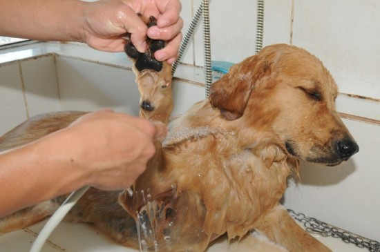

Serviços
Banho
Tanto cães e gatos são utilizam apnas produtos veterinários. Tomam banho de água aquecida, cães e gatos de pelo longo passam por uma escovação antes do banho. A secagem é feita em por aparelhos que não agridem a pele animal.

Tosa
A tosa é feita de acordo com o pedido do cliente e a pelagem do animal.